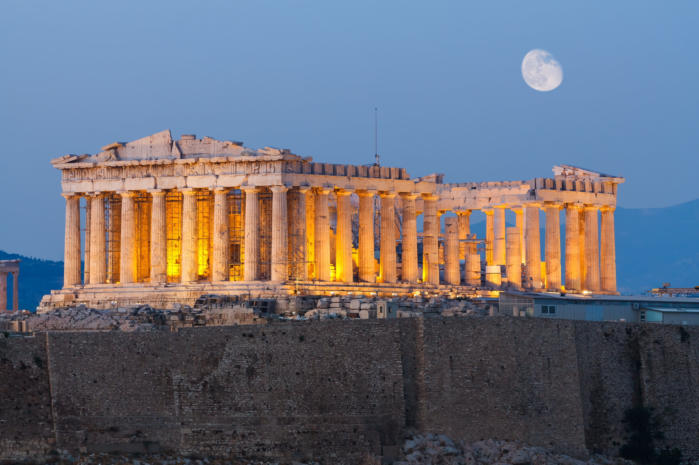

What was ancient Greece
Ancient Greece, the birthplace of democracy, was the source of some of the greatest literature, architecture, science and philosophy in Western civilization, and home to beautiful historical sites like the Acropolis and the Parthenon. The ancient Greece we think of Existed from 800 BC to 146 BC. There are 3 main periods in ancient Greek history, Archaic period, 800–490 BC. Classical period, 490–323 BC. Hellenistic period, 323–146 BC.
The Greeks made important contributions to philosophy, mathematics, astronomy, and medicine. Literature and theatre was an important aspect of Greek culture and influenced modern drama. The Greeks were known for their sophisticated sculpture and architecture. Greek culture influenced the Roman Empire and many other civilizations, and it continues to influence modern cultures today.